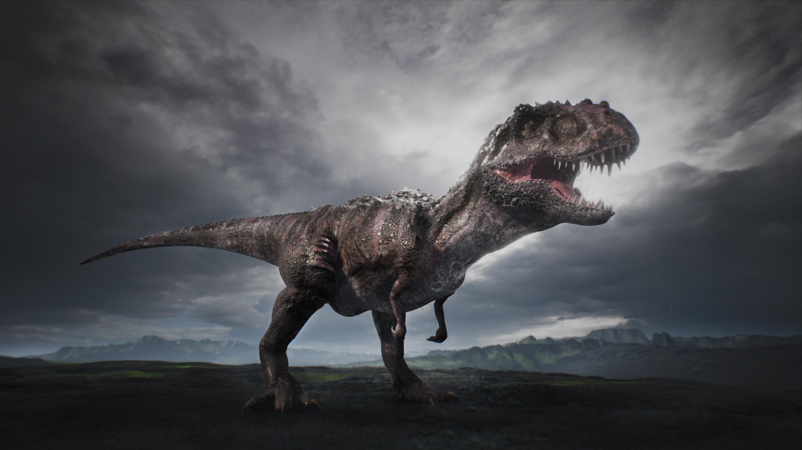

All about Marcel Jones
I like to eat meat, all kinds of meat. That is one thing I have in common with my favorite dinosaur. There is more about my favorite dinosaur on this page.

All about the TRex Dinosaur
This is a TRex dinosaur. It is my favorite dinosaur because it is the most feared. It will consume any and all things in its path, including me. With that said, I'm not sure why this is my favorite dinosaur.